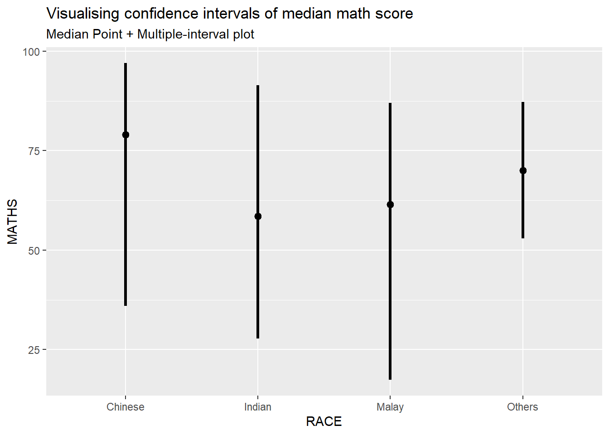
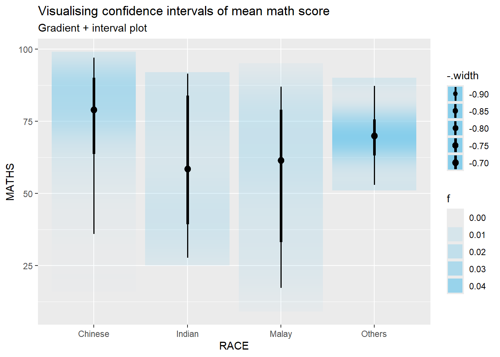
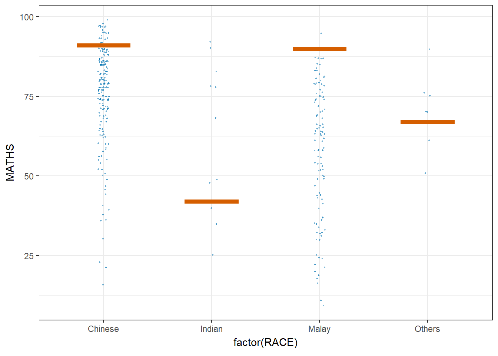

pacman::p_load(ungeviz, plotly, crosstalk,
DT, ggdist, ggridges,
colorspace, gganimate, tidyverse,
ggiraph)Hands-on_Ex04c
11 Visualising Uncertainty
11.1 Learning Outcome
Visualising uncertainty is relatively new in statistical graphics. In this chapter, i will gain hands-on experience on creating statistical graphics for visualising uncertainty. By the end of this chapter you will be able:
to plot statistics error bars by using ggplot2,
to plot interactive error bars by combining ggplot2, plotly and DT,
to create advanced by using ggdist, and
to create hypothetical outcome plots (HOPs) by using ungeviz package.
11.2 Getting Started
exam <- read_csv('data/Exam_data.csv',show_col_types = FALSE)11.3 Visualizing the uncertainty of point estimates: ggplot2 methods
A point estimate is a single number, such as a mean. Uncertainty, on the other hand, is expressed as standard error, confidence interval, or credible interval.
Important
Standard Error vs. Standard Deviation: SE measures uncertainty in the estimate, while SD measures variability in the sample.
Confidence Intervals: Use CI=xˉ±1.96×SE = {x} SECI=xˉ±1.96×SE for a 95% confidence interval.
Choosing the Right Visualization: Use
geom_errorbar()for error bars andgeom_ribbon()for shaded confidence intervals.
In this section, i will learn how to plot error bars of maths scores by race by using data provided in exam tibble data frame.
Firstly, code chunk below will be used to derive the necessary summary statistics.
my_sum <- exam %>% group_by(RACE) %>% summarise( n=n(), mean=mean(MATHS), sd=sd(MATHS) ) %>% mutate(se=sd/sqrt(n-1))
Tip
Things to learn from the code chunk above
group_by()of dplyr package is used to group the observation by RACE,summarise()is used to compute the count of observations, mean, standard deviationmutate()is used to derive standard error of Maths by RACE, andthe output is save as a tibble data table called my_sum.
Next, the code chunk below will be used to display my_sum tibble data frame in an html table format.
knitr::kable(head(my_sum), format = 'html')| RACE | n | mean | sd | se |
|---|---|---|---|---|
| Chinese | 193 | 76.50777 | 15.69040 | 1.132357 |
| Indian | 12 | 60.66667 | 23.35237 | 7.041005 |
| Malay | 108 | 57.44444 | 21.13478 | 2.043177 |
| Others | 9 | 69.66667 | 10.72381 | 3.791438 |
11.3.1 Plotting standard error bars of point estimates

ggplot(my_sum) +
geom_errorbar(
aes(x=RACE,
ymin=mean-se,
ymax=mean+se),
width=0.2,
colour="black",
alpha=0.9,
linewidth=0.5) +
geom_point(aes
(x=RACE,
y=mean),
stat="identity",
color="red",
size = 1.5,
alpha=1) +
ggtitle("Standard error of mean maths score by rac")This chart displays the standard error bars of the mean math scores for different races (Chinese, Indian, Malay, Others), with the error bars representing the uncertainty range of the estimated mean.
11.3.2 Plotting confidence interval of point estimates
Instead of plotting the standard error bar of point estimates, we can also plot the confidence intervals of mean maths score by race.

ggplot(my_sum) +
geom_errorbar(
aes(x=reorder(RACE, -mean),
ymin=mean-1.96*se,
ymax=mean+1.96*se),
width=0.2,
colour="black",
alpha=0.9,
linewidth=0.5) +
geom_point(aes
(x=RACE,
y=mean),
stat="identity",
color="red",
size = 1.5,
alpha=1) +
labs(x = "Maths score",
title = "95% confidence interval of mean maths score by race")
Tip
Things to learn from the code chunk above
The confidence intervals are computed by using the formula mean+/-1.96*se.
The error bars is sorted by using the average maths scores.
labs()argument of ggplot2 is used to change the x-axis label.
11.3.3 Visualizing the uncertainty of point estimates with interactive error bars
In this section, i have learn how to plot interactive error bars for the 99% confidence interval of mean maths score by race as shown in the figure below.
Tip
From this chart, I learned how to visualize the uncertainty of point estimates using interactive error bars, specifically by plotting the 99% confidence interval for the mean math scores of different races. The error bars indicate the range in which the true mean is likely to fall, showing the variability in scores among different groups.
11.4 Visualising Uncertainty: ggdist package
ggdist is an R package that provides a flexible set of ggplot2 geoms and stats designed especially for visualising distributions and uncertainty.
It is designed for both frequentist and Bayesian uncertainty visualization, taking the view that uncertainty visualization can be unified through the perspective of distribution visualization:
for frequentist models, one visualises confidence distributions or bootstrap distributions (see vignette(“freq-uncertainty-vis”));
for Bayesian models, one visualises probability distributions (see the tidybayes package, which builds on top of ggdist).
11.4.1 Visualizing the uncertainty of point estimates: ggdist methods
In the code chunk below, stat_pointinterval() of ggdist is used to build a visual for displaying distribution of maths scores by race.
exam %>%
ggplot(aes(x = RACE,
y = MATHS)) +
stat_pointinterval() +
labs(
title = "Visualising confidence intervals of mean math score",
subtitle = "Mean Point + Multiple-interval plot") 
Note
This function comes with many arguments, students are advised to read the syntax reference for more detail.
For example, in the code chunk below the following arguments are used:
.width = 0.95
.point = median
.interval = qi
exam %>%
ggplot(aes(x = RACE, y = MATHS)) +
stat_pointinterval(.width = 0.95,
.point = median,
.interval = qi) +
labs(
title = "Visualising confidence intervals of median math score",
subtitle = "Median Point + Multiple-interval plot")
11.4.2 Visualizing the uncertainty of point estimates: ggdist methods
exam %>%
ggplot(aes(x = RACE,
y = MATHS)) +
stat_pointinterval(
show.legend = FALSE) +
labs(
title = "Visualising confidence intervals of mean math score",
subtitle = "Mean Point + Multiple-interval plot")
Gentle advice: This function comes with many arguments, students are advised to read the syntax reference for more detail.
11.4.3 Visualizing the uncertainty of point estimates: ggdist methods
In the code chunk below, stat_gradientinterval() of ggdist is used to build a visual for displaying distribution of maths scores by race.
exam %>%
ggplot(aes(x = RACE,
y = MATHS)) +
stat_gradientinterval(
fill = "skyblue",
show.legend = TRUE
) +
labs(
title = "Visualising confidence intervals of mean math score",
subtitle = "Gradient + interval plot")
Gentle advice: This function comes with many arguments, students are advised to read the syntax reference for more detail.
11.5 Visualising Uncertainty with Hypothetical Outcome Plots (HOPs)
devtools::install_github("wilkelab/ungeviz")library(ungeviz)11.5.3 Visualising Uncertainty with Hypothetical Outcome Plots (HOPs)
ggplot(data = exam,
(aes(x = factor(RACE),
y = MATHS))) +
geom_point(position = position_jitter(
height = 0.3,
width = 0.05),
size = 0.4,
color = "#0072B2",
alpha = 1/2) +
geom_hpline(data = sampler(25,
group = RACE),
height = 0.6,
color = "#D55E00") +
theme_bw() +
transition_states(.draw, 1, 3)